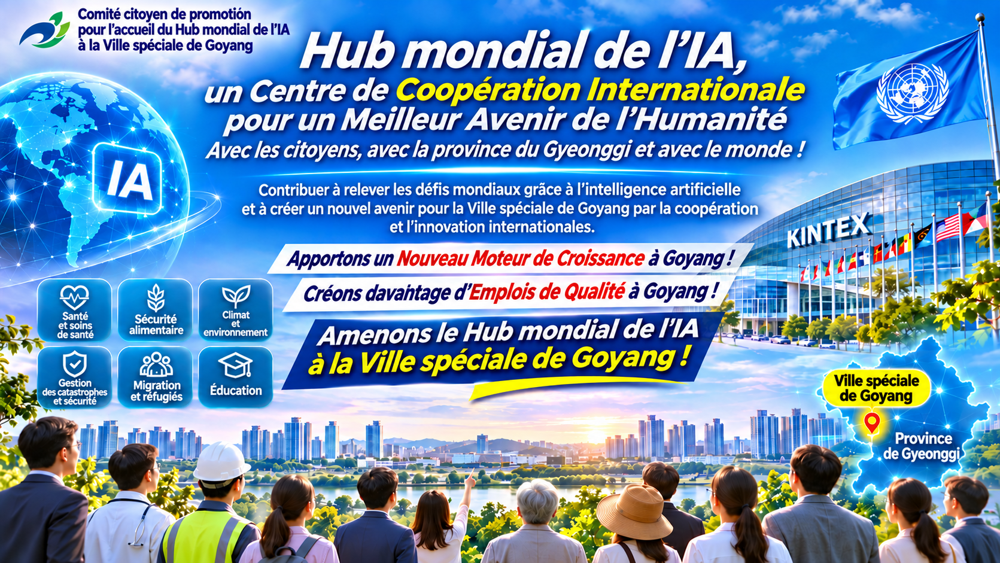

Ville spéciale de Goyang · Province de Gyeonggi · République de Corée
La coopération internationale pour un avenir meilleur
Nous souhaitons promouvoir la coopération entre les organisations internationales, les gouvernements, les universités, les instituts de recherche, les entreprises et la société civile afin d'explorer les possibilités offertes par l'intelligence artificielle pour relever les défis mondiaux communs.
Nous aspirons à faire de la Ville spéciale de Goyang un centre international de coopération en intelligence artificielle, de recherche scientifique et d'innovation, contribuant au développement durable et au bien-être de l'humanité.
Le Centre mondial de l'intelligence artificielle est une initiative visant à proposer la création d'une plateforme internationale de coopération associant l'expertise des organisations internationales aux capacités des technologies avancées d'intelligence artificielle.
Cette initiative vise à explorer l'utilisation responsable de l'intelligence artificielle pour répondre aux défis mondiaux dans des domaines tels que la santé publique, la sécurité alimentaire, le changement climatique, la protection de l'environnement, l'aide humanitaire, les migrations, l'emploi, l'éducation et la prévention des catastrophes.
Elle cherche également à favoriser le partage des connaissances, la recherche conjointe et la coopération entre les organisations internationales, les institutions publiques, les universités, les centres de recherche, les entreprises et la société civile.
Promouvoir le dialogue international, le partage des expériences et le développement de partenariats pour relever les défis mondiaux.
Explorer les applications responsables de l'intelligence artificielle et encourager la recherche scientifique ainsi que l'innovation technologique au service de l'intérêt général.
Étudier les possibilités de développer des projets pilotes, d'évaluer les technologies et d'appliquer l'intelligence artificielle à des problèmes d'intérêt public.
Encourager la formation professionnelle, les échanges d'experts et la diffusion internationale des connaissances.
La Ville spéciale de Goyang est située dans la province de Gyeonggi, en République de Corée, au sein de la région métropolitaine de Séoul.
La ville dispose d'infrastructures destinées aux expositions et conférences internationales, d'établissements médicaux, éducatifs et culturels, ainsi que de services urbains et de ressources naturelles.
Ces caractéristiques peuvent constituer une base pour étudier la possibilité de développer un centre international de coopération en intelligence artificielle.
Goyang se trouve dans la région métropolitaine de Séoul, ce qui facilite les échanges avec les réseaux économiques, scientifiques et institutionnels.
Le Centre international d'expositions et de congrès KINTEX dispose d'installations pour accueillir des salons, des conférences et des réunions internationales.
Ces infrastructures pourraient être utilisées pour organiser des forums scientifiques, des rencontres internationales et de futurs programmes de coopération.
Goyang accueille notamment le Centre national du cancer de Corée ainsi que d'autres établissements médicaux.
Ces ressources permettent d'envisager des possibilités de coopération dans les domaines de la santé publique, de la recherche médicale et des applications responsables de l'intelligence artificielle.
Les zones humides de Janghang et les autres espaces naturels constituent des ressources précieuses pour la recherche environnementale, l'éducation et les initiatives de développement durable.
La ville dispose de services résidentiels, sanitaires, éducatifs, culturels et urbains.
Les besoins spécifiques du personnel d'éventuelles organisations internationales et de leurs familles devront être déterminés dans le cadre des consultations appropriées.
Le renforcement de la coopération internationale pourrait contribuer au développement de la recherche, à la création d'emplois et à la croissance des activités économiques connexes.
Les résultats concrets dépendront de la nature et de l'ampleur des projets qui seront éventuellement mis en œuvre.
Goyang souhaite s'appuyer sur ses capacités existantes pour explorer les possibilités de développement d'un centre international contribuant à relever les défis mondiaux et à promouvoir le développement durable de la ville.
L'initiative du Centre mondial de l'intelligence artificielle envisage des domaines potentiels de coopération liés aux missions de neuf organisations internationales.
Ces domaines sont présentés afin d'illustrer de futures possibilités de collaboration et ne constituent ni des accords ni des engagements confirmés.
Santé publique, prévention des maladies, renforcement des systèmes de santé, analyse des données médicales et utilisation responsable de l'intelligence artificielle.
Sécurité alimentaire, aide humanitaire, durabilité des chaînes d'approvisionnement et analyse des crises alimentaires.
Changement climatique, protection de l'environnement, biodiversité et suivi des conditions environnementales.
Protection des réfugiés, déplacements forcés, aide humanitaire et utilisation responsable des données dans les activités de protection.
Migrations internationales, soutien aux personnes déplacées, aide humanitaire et solutions numériques pour les services liés aux migrations.
Emploi, droits des travailleurs, formation professionnelle et analyse des effets de l'intelligence artificielle sur l'avenir du travail.
Télécommunications numériques, infrastructures de connectivité, communications d'urgence et systèmes d'alerte précoce en cas de catastrophe.
Protection de l'enfance, éducation, inclusion numérique et utilisation responsable de l'intelligence artificielle dans le respect des droits des enfants.
Développement durable, réponse aux crises, renforcement des capacités institutionnelles et applications de l'intelligence artificielle dans les programmes de développement.
Les organisations internationales mentionnées ci-dessus sont présentées uniquement en relation avec leurs mandats institutionnels et les domaines potentiels de coopération future.
Cela ne signifie pas que ces organisations aient confirmé leur participation à cette initiative, ni qu'elles aient accepté d'établir des bureaux ou de transférer des unités dans la Ville spéciale de Goyang.
Toute coopération future nécessitera des consultations officielles, les décisions institutionnelles appropriées et les procédures d'approbation applicables.
L'initiative du Centre mondial de l'intelligence artificielle propose une approche progressive en trois étapes tenant compte des besoins réels des éventuels partenaires internationaux.
Examiner les conditions nécessaires pour faciliter le démarrage stable des activités d'éventuelles organisations internationales et institutions partenaires à Goyang.
Les domaines d'étude pourraient comprendre les bureaux, les transports, le logement, les soins de santé, l'éducation et d'autres services.
Promouvoir la coopération entre les institutions publiques, les universités, les centres de recherche, les entreprises et la société civile.
Explorer les possibilités de recherche conjointe, de conférences internationales, de projets pilotes en IA et d'échanges d'experts.
Développer une coopération à long terme contribuant aux objectifs des organisations internationales et au développement durable de Goyang.
Les domaines potentiels comprennent la recherche scientifique, les possibilités d'emploi, les activités économiques et le développement régional.
Les installations, les ressources financières, les mesures institutionnelles et les programmes de coopération devront être définis au moyen de consultations et de procédures officielles.
Le Comité citoyen pour promouvoir l'accueil du Centre mondial de l'intelligence artificielle dans la Ville spéciale de Goyang est une initiative de la société civile destinée à sensibiliser le public et à élargir la participation citoyenne.
Le Comité souhaite soutenir le débat public sur les possibilités de coopération internationale, le développement de l'intelligence artificielle et la croissance durable de la ville.
Ses activités comprennent la diffusion d'informations, la promotion de la participation citoyenne, le débat sur les propositions stratégiques et la communication avec les institutions concernées.
Transparence, responsabilité, participation citoyenne constructive et respect des procédures officielles de décision.
L'initiative du Centre mondial de l'intelligence artificielle cherche à encourager le dialogue avec les organisations et institutions intéressées par le développement responsable de l'intelligence artificielle, la coopération internationale et le développement durable.
Les domaines potentiels de collaboration comprennent :
Échanges d'expériences et de perspectives sur la coopération internationale, la gouvernance de l'intelligence artificielle et l'innovation technologique au service de l'intérêt général.
Exploration des possibilités de recherche multidisciplinaire, de partage des connaissances et de développement de réseaux scientifiques internationaux.
Étude des possibilités de projets pilotes, d'applications pratiques et d'évaluation des technologies d'intelligence artificielle responsable.
Exploration de programmes de formation, de séminaires, de forums internationaux et d'activités de renforcement des capacités.
Les domaines mentionnés représentent des possibilités potentielles de collaboration et n'impliquent pas l'existence d'accords confirmés avec des organisations internationales.
Nous accueillons favorablement l'intérêt des organisations internationales, des instituts de recherche, des experts et des citoyens pour le concept du Centre mondial de l'intelligence artificielle et les activités du Comité citoyen.
Vous pouvez obtenir des informations complémentaires en consultant les pages en français de ce site.
La version coréenne du site propose également des documents et services supplémentaires en coréen.
Guide du site Version coréenneComité citoyen pour promouvoir l'accueil du Centre mondial de l'intelligence artificielle à Goyang
Ce site présente une initiative de la société civile et ses activités. Il ne signifie pas que les autorités gouvernementales aient pris une décision officielle concernant la création du Centre mondial de l'intelligence artificielle, ni qu'une organisation internationale ait confirmé sa participation.
Les pages suivantes proposent des informations plus détaillées sur le Centre mondial de l'IA, la Ville spéciale de Goyang, la coopération internationale et la participation citoyenne.
Concept, objectifs et domaines potentiels de coopération internationale.
En savoir plusAtouts géographiques, infrastructures et possibilités de développement.
En savoir plusNeuf organisations internationales et domaines potentiels de collaboration.
En savoir plusInstallation initiale, soutien opérationnel et croissance partagée.
En savoir plusInformations sur les activités, les événements et les développements récents.
Voir les actualitésInformations sur les possibilités de soutenir l'initiative et de participer à ses activités.
Comment participerLe site de l'initiative du Centre mondial de l'intelligence artificielle propose des pages principales en dix langues pour les visiteurs de différents pays, les organisations internationales, les institutions de recherche, les entreprises et les citoyens.
Vous pouvez sélectionner votre langue préférée à l'aide du sélecteur situé en haut de la page.
La version coréenne propose des documents et services supplémentaires en coréen.
Les pages et les services disponibles peuvent varier selon la langue sélectionnée.